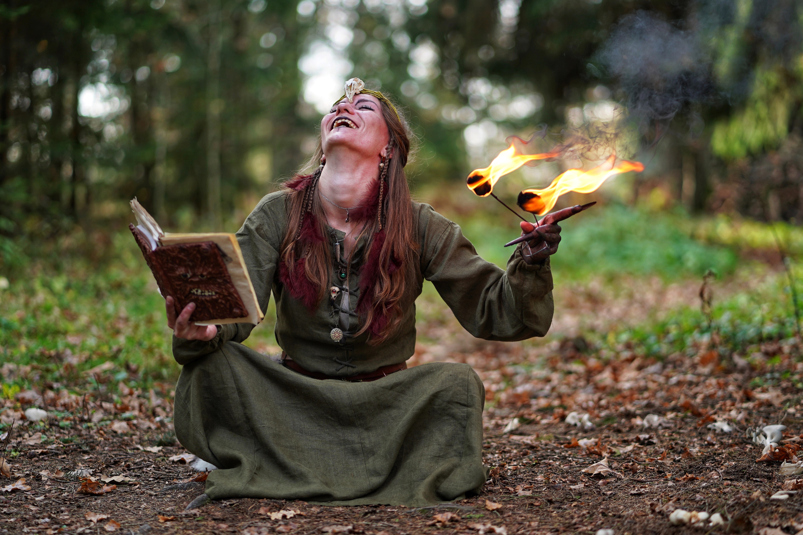

Odin Recipes
Charming spell to enthrall your lover!
“Tis now the very witching time of night, when churchyards yawn and hell itself breathes out contagion to this world.”

This ritual is to be performed on the night of the New Moon.:
- Go deep into the forest
- Cleanse the area with a purification ritual using sea salt.
- Using a compass, establish the alignment of your surrounding.
- Moving clockwise, cast a magic circle
- Gather 2 cattails, honey and lavender oil.
- Mix a teaspoon of honey in half a cup of lavender oil.
- Dip the cattails in the honeyed oil
Light the cattails and call forth the spirits of the forest with this chant:
Blood of the Mother from whom we are born,
Sharpen my focus and strengthen my will.
Fairies of the forest hear the summons of this Witch.
May the wisdom of the ancients bring forth, and
Passion and romance in my lover ignite!
Let my spell be spread on air.
That is my will, so mote it be!
Back to homepage